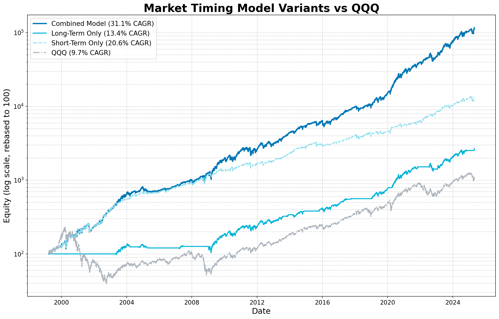

I am a data-driven investor with a background in quantitative finance and systematic trading. Having worked across multiple asset classes in some of the world's largest financial institutions on both the sell side (investment banks) as well as the buy side (Hedge funds & money managers), I have been building financial trading models for over 15 years and I am now looking to share the fruits of my labour with a select audience of finance professionals and experienced traders. The models that I trade are very logical and can be explained using a number of widely proven characteristics of financial markets including, human psychology/investor behaviour as well as volatility clustering, momentum factor and risk premium harvesting.
The model dynamically adjusts exposure to QQQ based on long-term and short-term signals. The premise to the long term model is the following core belief around which I have built the signals for the model:
I think of bull markets like forest fires. They usually start with a spark — some catalyst that lights things up when investors are underinvested. That underexposure acts like dry kindling: it doesn’t take much to get things going. Early on, everything catches — the rally is broad, fast, and feeds on itself as more capital rushes in. But over time, the fuel starts to dry up. Weaker stocks start to roll over — their earnings disappoint, their narratives fray. Leadership narrows, participation fades, and momentum weakens. Eventually, there’s not enough left to sustain it. And when the structure’s hollowed out beneath the surface, the collapse often comes quickly — just like the final phase of a fire.
The premise to the short term model is the following core belief:
Levered/short term investors behave in a loss aversion, greed/fear based framework, buying when prices rise and selling when prices fall which causes sharp reversals in prices in the 1 day - 2 week time horizon as their positions get tested by underlying flows and macro data. The short term model looks to take advantage of these short term overreactions by scaling in to long exposure as the market shows signs of capitulation selling and then scaling out of long exposure when the market shows signs of upside exhaustion.
Backtested results showing superior risk-adjusted returns versus QQQ Buy & Hold.
